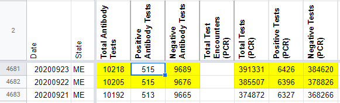
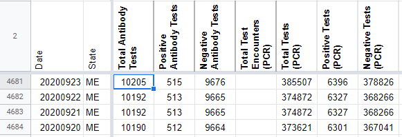

[ME] Did not update testing update for 9/22
Issue number 862
the-daniel-lin opened this issue on September 24, 2020 at 8:59 am
Labels Data quality Backfill
State or US: Maine
Describe the problem On 9/22, due to technical difficulties, ME did not update their testing data, so CTP carried over values for total, positive, and negative antibody and PCR tests. On 9/23, CTP recorded data as of 9/21 where we should have recorded data as of 9/22.
We need to:
- Take the testing values from 9/23 (as of 9/21) and record them for 9/22
- Record testing values in 9/23 with data as of 9/22
Link to data source https://www.maine.gov/dhhs/mecdc/infectious-disease/epi/airborne/coronavirus/data.shtml
Comments
the-daniel-lin commented on September 24, 2020 at 9:03 am
AFTER: 
BEFORE: 